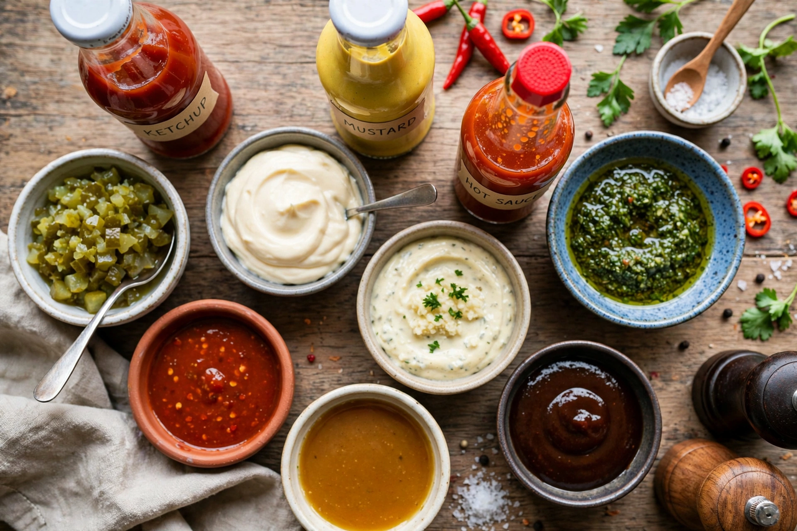

Condiment
From Wikipedia, the free encyclopedia

A condiment is a preparation added to food — typically after cooking, at the table or during serving — to impart a specific flavour, enhance the dish or complement it. Common condiments include Ketchup, mustard, Mayonnaise, Soy sauce, Hot sauce and Chutney; salt, the oldest and most universal, is sometimes classed as a seasoning instead.
History
Ancient Rome flavoured food with Garum, a fermented fish sauce similar to modern Asian Fish sauce. Medieval and early-modern European cooking used spiced sauces and preserves such as Verjuice and mustard; long-distance trade in spices made condiments symbols of wealth. The industrial era bottled them: Lea & Perrins launched Worcestershire sauce in 1837, Heinz made ketchup a mass product, and McIlhenny's Tabasco (1868) created the modern hot-sauce market.
Types
Condiments divide into sauces (ketchup, Barbecue sauce), pastes and spreads (mustard, Wasabi, Harissa), pickles and relishes (pickles, Piccalilli, chutneys), fermented products (soy sauce, fish sauce, Kimchi as a side), dips and sprinkled seasonings. Regional repertoires differ sharply: Japanese tables feature soy sauce and Furikake; Indian meals include Raita, chutneys and pickles; Mexican cooking relies on salsas and moles.
Industry
The global condiment market is dominated by large food groups such as Kraft Heinz, Unilever (Hellmann's, Maille) and Nestlé (Maggi). Single-serve sachets in fast food made condiments ubiquitous, and craft and fermented condiments have grown rapidly since the 2010s.